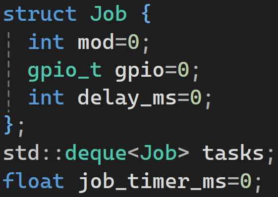
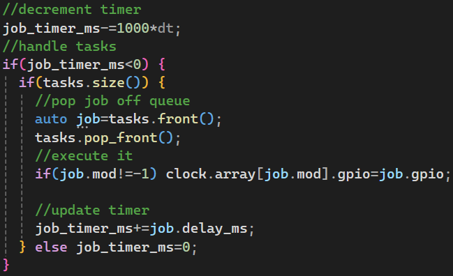

• Press G to toggle the gpio view. This is the data that gets sent to the modules.
• Press T to toggle the task view. This is the queue of operations to process.
This project is a simulation of the
retro clock
that that I made.
The Arduino code of the physical clock uses plenty of delays, so as to get the satisfying click patterns of the segments.
To circumvent this usage of delays, and simulate the system in a single-threaded, non-blocking way, I used an instruction queue.
The core instruction of the system is a general-purpose input/output (GPIO) write, and a delay.
Each element of the instruction queue stores an index to the module to write to, the data to write, and a delay.

